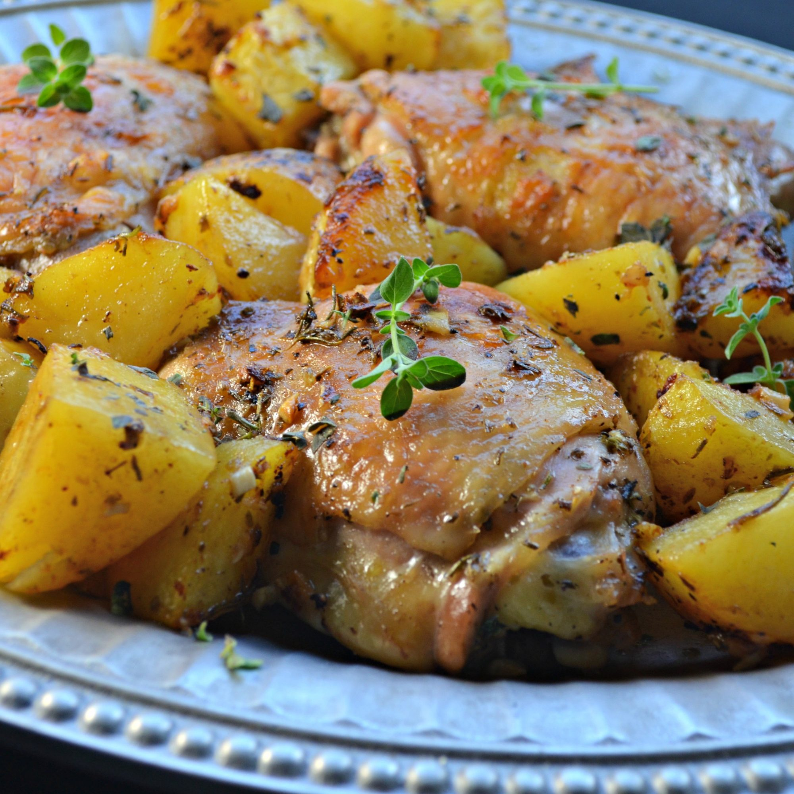

Greek lemon chicken and potatoes

Description
This is a recipe for Greek lemoney chicken and potatoes that comes from this website.
Ingredients
- 1kg skin-on, bone-in chicken thighs
- 1 tablespoon coarse salt
- 1 tablespoon dried oregano
- 1 teaspoon freshly ground black pepper
- 1 teaspoon dried rosemary
- 1 pinch cayenne pepper
- juice of 1 lemon
- 100ml olive oil
- 6 cloves garlic, minced
- 3 russet potatoes, peeled and quartered
- 200ml chicken stock, plus splash to deglaze pan
- chopped fresh oregano for garnish
Method
- Preheat oven to 220 degrees C. Lightly oil a large roasting pan.
- Place chicken pieces in large bowl. Season with salt, oregano, pepper, rosemary, and cayenne pepper. Add fresh lemon juice, olive oil, and garlic. Place potatoes in bowl with the chicken; stir together until chicken and potatoes are evenly coated with marinade.
- Transfer chicken pieces, skin side up, to prepared roasting pan, reserving marinade. Distribute potato pieces among chicken thighs. Drizzle with chicken stock. Spoon remainder of marinade over chicken and potatoes.
- Place in preheated oven. Bake in the preheated oven for 20 minutes. Toss chicken and potatoes, keeping chicken skin side up; continue baking until chicken is browned and cooked through, about 25 minutes more. An instant-read thermometer inserted near the bone should read 75 degrees C. Transfer chicken to serving dish and keep warm.
- Set oven to grill or highest heat setting. Toss potatoes once again in pan juices. Place pan under broiler and broil until potatoes are caramelized, about 3 minutes. Transfer potatoes to serving dish with chicken.
- Place roasting pan on stove over medium heat. Add a splash of stock and stir up browned bits from the bottom of the pan. Strain; spoon juices over chicken and potatoes. Top with chopped oregano.